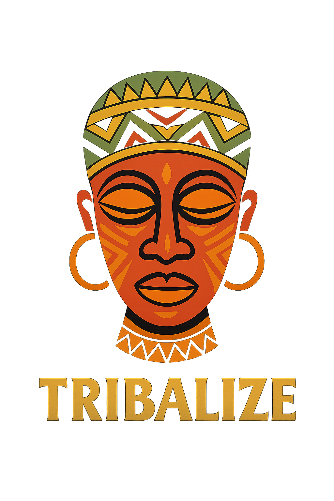

Home
Products
About
Contact Us
Tribalize Africa
A feel of Africa in every apparel

Attribute
Description
Name
Tapiwa Jairos Biza
Date Of Birth
20 February 2003
Sex
Male
Identity Number
63-2431342 W 26
Name
Tapiwa Jairos Biza